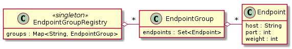

Client-side load balancing and service discovery¶
You can configure an Armeria client to distribute its requests to more than one server autonomously, unlike traditional server-side load balancing where the requests go through a dedicated load balancer such as L4 and L7 switches.
There are 4 elements involved in client-side load balancing in Armeria:
Endpointrepresents an individual host (with an optional port number) and its weight.EndpointGrouprepresents a set ofEndpoints.EndpointGroupRegistryis a global registry ofEndpointGroupswhere eachEndpointGroupis identified by its unique name.- A user specifies the target group name in the authority part of a URI, e.g. http://group:my_group/ where my_group is the group name, prefixed with group:.

Creating an EndpointGroup¶
There are various EndpointGroup implementations provided out of the box, but let’s start simple with
StaticEndpointGroup which always yields a pre-defined set of Endpoints specified
at construction time:
// Create a group of well-known search engine endpoints.
EndpointGroup searchEngineGroup = new StaticEndpointGroup(
Endpoint.of("www.google.com", 443),
Endpoint.of("www.bing.com", 443),
Endpoint.of("duckduckgo.com", 443);
List<Endpoint> endpoints = searchEngineGroup.endpoints();
assert endpoints.contains(Endpoint.of("www.google.com", 443));
assert endpoints.contains(Endpoint.of("www.bing.com", 443));
assert endpoints.contains(Endpoint.of("duckduckgo.com", 443));Registering an EndointGroup¶
An EndpointGroup becomes visible by a client such as HttpClient only after it’s registered in
EndpointGroupRegistry. You need to specify 2 more elements to register an EndpointGroup:
- The name of the
EndpointGroup - An
EndpointSelectionStrategythat determines whichEndpointis used for each request- Use EndpointSelectionStrategy.WEIGHTED_ROUND_ROBIN for weighted round robin.
- Use EndpointSelectionStrategy.ROUND_ROBIN for unweighted round robin.
- Use
StickyEndpointSelectionStrategyif you want to pin the requests based on a criteria such as a request parameter value. - You can implement your own
EndpointSelectionStrategy.
The following example registers the searchEngineGroup we created at Creating an EndpointGroup:
EndpointGroupRegistry.register("search_engines", searchEngineGroup,
EndpointSelectionStrategy.WEIGHTED_ROUND_ROBIN);
assert EndpointGroupRegistry.get("search_engines") == searchEngineGroup;Note
You can create an Endpoint with non-default weight using withWeight() method:
// The default weight is 1000.
Endpoint endpointWithDefaultWeight = Endpoint.of("foo.com", 8080);
Endpoint endpointWithCustomWeight = endpointWithDefaultWeight.withWeight(1500);
assert endpointWithDefaultWeight.weight() == 1000;
assert endpointWithCustomWeight.weight() == 1500;Connecting to an EndpointGroup¶
Once an EndpointGroup is registered, you can use its name in the authority part of a URI:
// Create an HTTP client that sends requests to the 'search_engines' group.
HttpClient client = HttpClient.of("https://group:search_engines/");
// Send a GET request to each search engine.
List<CompletableFuture<?>> futures = new ArrayList<>();
for (int i = 0; i < 3; i++) {
final HttpResponse res = client.get("/");
final CompletableFuture<AggregatedHttpMessage> f = res.aggregate();
futures.add(f.thenRun(() -> {
// And print the response.
System.err.println(f.getNow(null));
}));
}
// Wait until all GET requests are finished.
CompletableFuture.allOf(futures.toArray(new CompletableFuture[0])).join();Cleaning up an EndpointGroup¶
EndpointGroup extends java.lang.AutoCloseable, which means you need to call the close()
method once you are done using it, usually when your application terminates:
// Unregister the group from the registry.
EndpointGroupRegistry.unregister("search_engines");
// Release all resources claimed by the group.
searchEngines.close();close() is a no-op for some EndpointGroup implementations, but not all implementations are so,
especially those which updates the Endpoint list dynamically, such as refreshing the list periodically.
Note
An EndpointGroup, whose Endpoints change even after it’s instantiated and registered,
is called dynamic endpoint group.
Removing unhealthy Endpoint with HttpHealthCheckedEndpointGroup¶
HttpHealthCheckedEndpointGroup decorates an existing EndpointGroup to filter out the unhealthy
Endpoints from it so that a client has less chance of sending its requests to the unhealthy
Endpoints. It determines the healthiness by sending so called ‘health check request’ to each
Endpoint, which is by default a simple GET request to a certain path. If an Endpoint
responds with non-200 status code or does not respond in time, it will be marked as unhealthy and thus
be removed from the list.
// Create an EndpointGroup with 2 Endpoints.
StaticEndpointGroup group = new StaticEndpointGroup(
Endpoint.of("192.168.0.1", 80),
Endpoint.of("192.168.0.2", 80));
// Decorate the EndpointGroup with HttpHealthCheckedEndpointGroup
// that sends HTTP health check requests to '/internal/l7check' every 10 seconds.
HttpHealthCheckedEndpointGroup healthCheckedGroup =
new HttpHealthCheckedEndpointGroupBuilder(group, "/internal/l7check")
.protocol(SessionProtocol.HTTP)
.retryInterval(Duration.ofSeconds(10))
.build();
// Wait until the initial health check is finished.
healthCheckedGroup.awaitInitialEndpoints();
// Register the health-checked group.
EndpointGroupRegistry.register("my-group", healthCheckedGroup);Note
You can decorate any EndpointGroup implementations with HttpHealthCheckedEndpointGroup,
including what we will explain later in this page.
DNS-based service discovery with DnsEndpointGroup¶
Armeria provides 3 DNS-based EndpointGroup implementations:
DnsAddressEndpointGroupthat retrieves theEndpointlist from A and AAAA recordsDnsServiceEndpointGroupthat retrieves theEndpointlist from SRV recordsDnsTextEndpointGroupthat retrieves theEndpointlist from TXT records
They refresh the Endpoint list automatically, respecting TTL values, and retry when DNS queries fail.
DnsAddressEndpointGroup is useful when accessing an external service with multiple public IP addresses:
DnsAddressEndpointGroup group =
new DnsAddressEndpointGroupBuilder("www.google.com")
// Refresh more often than every 10 seconds and
// less often than every 60 seconds even if DNS server asks otherwise.
.ttl(/* minTtl */ 10, /* maxTtl */ 60)
.build();
// Wait until the initial DNS queries are finished.
group.awaitInitialEndpoints();DnsServiceEndpointGroup is useful when accessing an internal service with
SRV records, which is often found in modern container
environments that leverage DNS for service discovery such as Kubernetes:
DnsServiceEndpointGroup group =
new DnsServiceEndpointGroupBuilder("_http._tcp.example.com")
// Custom backoff strategy.
.backoff(Backoff.exponential(1000, 16000).withJitter(0.3))
.build();
// Wait until the initial DNS queries are finished.
group.awaitInitialEndpoints();DnsTextEndpointGroup is useful if you need to represent your Endpoints in a non-standard
form:
// A mapping function must be specified.
DnsTextEndpointGroup group = DnsTextEndpointGroup.of("example.com", (byte[] text) -> {
Endpoint e = /* Convert 'text' into an Endpoint here. */;
return e
});
// Wait until the initial DNS queries are finished.
group.awaitInitialEndpoints();